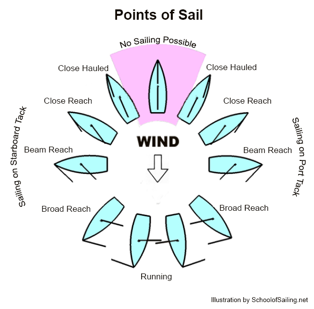
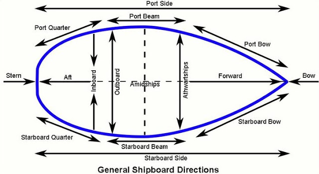
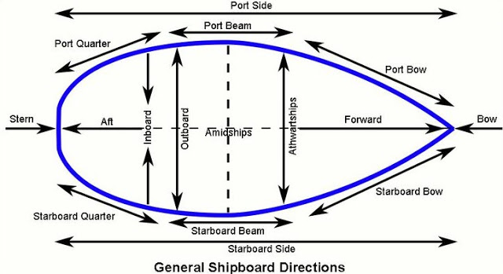

They are your upperbody protection against water and wind.
Trousers, Salopettes & Shorts
They are your lowerbody protection against water and wind.
Tshirt & Polos
They are your upperbody inner clothing. They provide warmth and flexibility while sailing.
Caps & Headwear
They provide warmth and protection for your head and face.
This equipment is really important as it should both cover your face when necessary while providing a clear vision.
Gloves
They protect your hands from rope burns and deformation caused by excessive use. Also provide warmth when needed.
Boots
Protects against slipping and tripping while providing warmth and flexibility.
Bags & Luggage
A neopren, hydrophobic and water resistant bag is necessary on a long journey. It's the housing of most of your items.
Sailing Techniques

Close Hauled
This is defined as the closest to the wind we can efficiently sail and is usually a relative
bearing of 1 o'clock or 11 o'clock. On this point of sail the sails are brought in as close to
the centerline of the boat as possible. Here, we will be making small changes to our course to
fill the sails since we already have them trimmed in all the way.
Close Reach
The wind is coming from ahead of the boat with a relative bearing of 2 o'clock or 10 o'clock.
The fastest point of sail for most boats. Sail trim is critical for our boat speed. Telltales on
the sails will tell us how to trim. The basic idea is to let the sails out until they luff (flap)
then bring them in just to the point on no longer luffing.
Beam Reach
The wind is coming across the boat at a right angle to the centerline, the relative bearing would be
3 o'clock or 9 o'clock. In order to make the sails most efficient we adjust (trim) them for maximum
boat speed.
Broad Reach
The wind is over one of our back shoulders or at a relative bearing of about 4 o'clock or 8 o'clock.
We may adjust the sails but sail trim is not critical. Just as in running above we probably won't
be able to let the mainsail out beyond just where it starts to touch the rigging
Running
This puts us directly downwind with the sails let out at right angles to the centerline of the boat.
The wind is at a relative bearing of 6 o'clock. We want to expose as much sail area as possible.
Sail trim is not critical, small adjustments don't make much difference in our boat speed.
Note: The standing rigging on most boats will not allow the mainsail to eased far enough out.
That's ok, let it out to the point just before the sail touches any rigging (so as to prevent chafe)
then tension the boom vang to bring the boom down.
 
